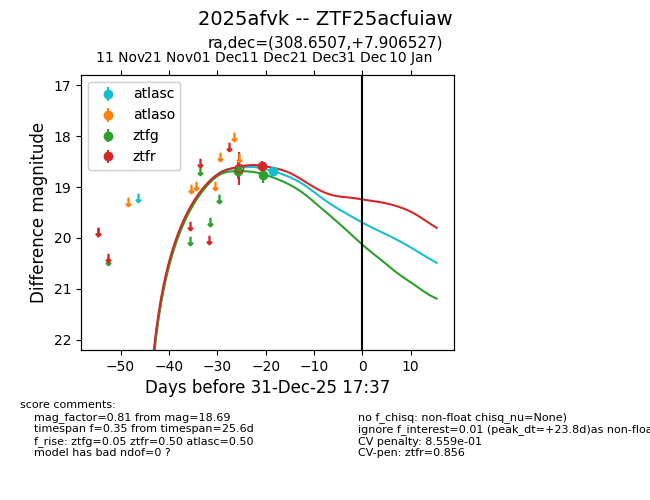
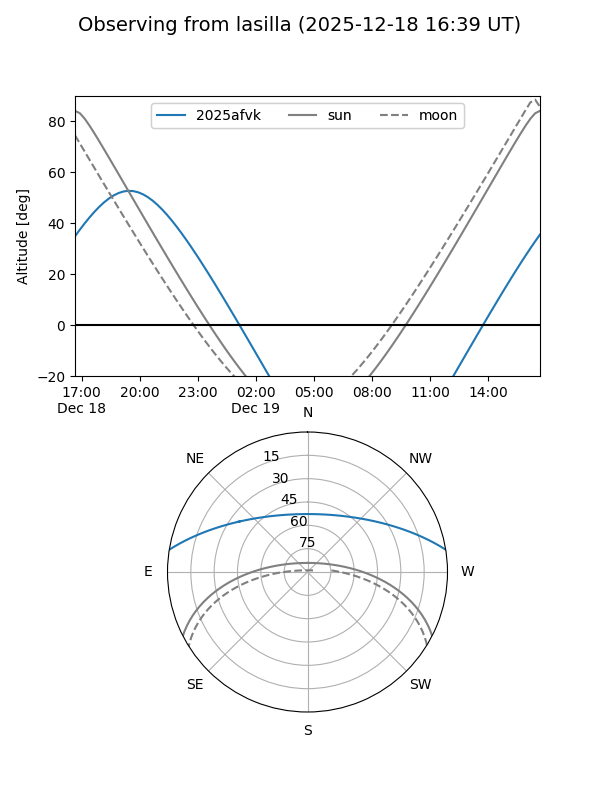
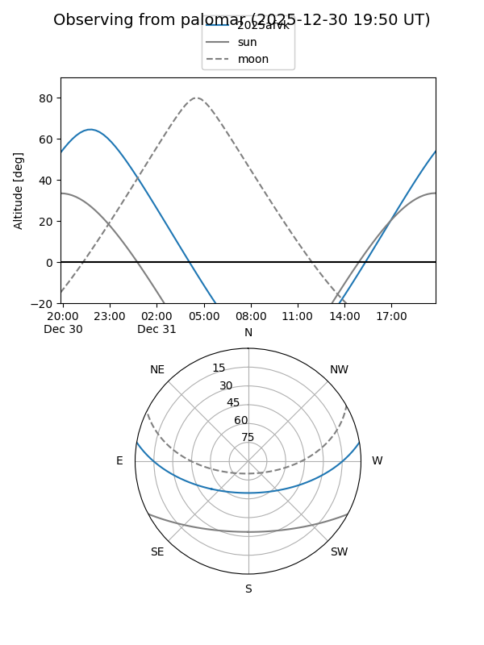
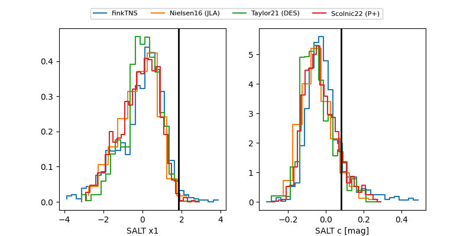

2025afvk
Target 2025afvk at 2025-12-18 11:17
Aliases and brokers:
FINK: fink-portal.org/ZTF25acfuiaw
Lasair: lasair-ztf.lsst.ac.uk/objects/ZTF25acfuiaw
ALeRCE: alerce.online/object/ZTF25acfuiaw
TNS: wis-tns.org/object/2025afvk
YSE: ziggy.ucolick.org/yse/transient_detail/2025afvk
alt names
ZTF25acfuiaw (ztf,fink_ztf)
2025afvk (tns,yse)
Coordinates:
equatorial (ra, dec) = 308.6507,+7.90653
equatorial (HMS+DMS) = 20:34:36.17,+07:54:23.50
galactic (l, b) = (52.6099,-18.71269)
Photometry
last atlasc=18.69, ztfg=18.76, ztfr=18.58
1 atlasc, 2 ztfg, 1 ztfr detections
Lightcurve

Visibility


Additional plots
